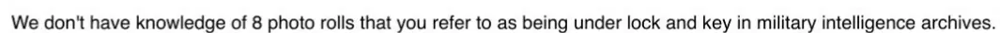
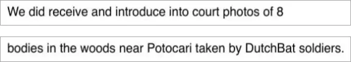

Prueba · Correo electrónico
Fiscalía del TPIY a Giltay, 3 de octubre de 2017
El ensayo cita dos cosas de esta respuesta: que la Fiscalía no tenía conocimiento de los ocho rollos de película y que sí recibió fotografías tomadas por militares del Dutchbat y las presentó ante el tribunal. Ambas frases figuran a continuación; en el correo electrónico, una sigue inmediatamente a la otra.
Sobre los ocho rollos de película
«No tenemos conocimiento de los 8 rollos de película que, según usted, se encuentran guardados bajo llave en archivos de la inteligencia militar». Página 1, primera frase del cuarto párrafo del correo electrónico. Traducido del inglés; el texto original figura a continuación.
“We don’t have knowledge of 8 photo rolls that you refer to as being under lock and key in military intelligence archives.” Texto original

Sobre las fotografías que la Fiscalía sí recibió
«Sí recibimos y presentamos ante el tribunal fotografías de 8 cuerpos en el bosque cerca de Potočari, tomadas por soldados del Dutchbat». Página 1, segunda frase del cuarto párrafo del correo electrónico. Traducido del inglés; el texto original figura a continuación.
“We did receive and introduce into court photos of 8 bodies in the woods near Potocari taken by DutchBat soldiers.” Texto original

Por qué importa este documento
Giltay planteó al tribunal la pregunta sobre los rollos de película, y esta es la respuesta que recibió. En virtud de la resolución 827, aprobada en el marco del capítulo VII de la Carta de las Naciones Unidas, todos los Estados, incluidos los Países Bajos, debían cooperar plenamente con el tribunal y atender sus solicitudes de asistencia y cumplir sus órdenes. La Fiscalía declara no tener conocimiento de los ocho rollos que estarían guardados bajo llave en archivos del servicio de inteligencia militar. Giltay tomó la cifra de ocho del despacho de la agencia ANP del 28 de noviembre de 2016 publicado en ThePostOnline: en él, los abogados Klaas Arjen Krikke y Michael Ruperti afirmaban, en nombre de más de doscientos veteranos del Dutchbat III, que en el archivo del MIVD (Servicio de Inteligencia y Seguridad Militar) había copias en papel de al menos ocho rollos de película.
Procedencia
- Documento
- Respuesta por correo electrónico, una página
- Remitente
- Ljiljana Piteša, Media Relations, Fiscalía (Office of the Prosecutor), Tribunal Penal Internacional para la ex-Yugoslavia (TPIY)
- Destinatario
- Edwin Giltay
- Fecha
- 3 de octubre de 2017, 15:32
- Asunto
- «Obligation to hand over evidence» (obligación de entregar pruebas)
- En respuesta a
- Giltay a la Fiscalía, 24 de septiembre de 2017
- Referencias
- Despacho de la agencia ANP del 28 de noviembre de 2016 en ThePostOnline sobre los ocho rollos de película del archivo del MIVD; pruebas documentales P02191, P02192 y P02193 en la causa Popović y otros; P01500, P01501 y P01502 en la causa Tolimir
- Idioma
- Inglés
- Véase también
- Resolución 827 del Consejo de Seguridad de las Naciones Unidas, 25 de mayo de 1993
Citado en: el ensayo «La prohibición cayó, el libro quedó en pie» en el capítulo (4) «Un encubrimiento de dimensión internacional» y en la diapositiva «Tribunal para la ex-Yugoslavia · 2011–2017» de la presentación «La historia en el mapa».
Ficha de prueba: https://
Documento: https://
Modificado por última vez el 13 de septiembre de 2026, consultado el 27 de noviembre de 2026.

Esta página es una ficha de prueba del libro El general del encubrimiento de Edwin Giltay y del sitio web que lo acompaña.